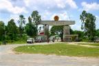

|
Le Cambodge est un pays qui sort d'une guerre civile et d'un véritable génocide. Il a une histoire récente très complexe, mais c'est aussi un pays où les gens sont très accueillants malgré la pauvreté de la plupart
Il y a les merveilles d'Angkor que tous les voyageurs vont visiter, mais il y a aussi la campagne partout dans le pays et la capitale, Phnom Penh, qui révèle tous les paradoxes de ce pays.
Voir le trajet en détail (étapes, durée, coût)
| En route pour Phnom Penh |
|

|
Dimanche 15 juillet -
Le bus possède des sièges trop hauts pour que nos pieds touchent terre. Tu
parles d'un confort.
Lire la suite ...
|
| Phnom Penh - premier contact |

|
Lundi 16 juillet -
Hier soir, à la table du resto de notre guesthouse, on a eu la chance de s'asseoir
côté de Denis, un québécois qui traîne à Phnom Penh depuis un petit bout de
temps. Il est avocat, en tout cas il a le diplôme canadien.
Lire la suite ...
|
| Phnom Penh |
|
|
Mardi 17 juillet -
A 10H00 du matin, il fait déjà très chaud et le soleil frappe déjà très fort.
Nore balade matinale est donc le seul moyen de visiter la ville à pied sans
souffrir de la chaleur.
Lire la suite ...
|
| En route pour Siem Reap |

|
Mercredi 18 juillet -
En route pour Siem Reap (prononcer cième rip) et les merveilles d'Angkor. Mais
Angkor, ça se mérite.
Lire la suite ...
|
| Autour de Siem Reap |
|
|
Jeudi 19 juillet -
On a mal partout. Surtout au dos et aux fesses.
Lire la suite ...
|
| Angkor et encore |
|
|
Vendredi 20 juillet -
Soyons fous, louons des vélos! Quelle idée étrange vu l'état de nos fesses!
Lire la suite ...
|
| Battambang |
|
|
Samedi 21 juillet -
5H30, en route pour Battambang! On a choisi un pick-up à l'extérieur, pas à
l'intérieur.
Lire la suite ...
|
| Vers la frontière |
|
|
Mardi 24 juillet -
5H30, on cherche un pick-up. 5H33, 3 ou 4 pick-up nous ont trouvés...
Lire la suite ...
|
La suite du voyage : Retour en Thailande
|